class: title-slide count: false .logo-title[] ## ELECTENG 209 # Electronics Systems Design ### Introduction to Practical Design Considerations .TitleAuthor[Duleepa J Thrimawithana] --- layout: true name: template_slide .logo-slide[] .footer[[Duleepa J Thrimawithana](https://www.linkedin.com/in/duleepajt), Department of Electrical, Computer and Software Engineering (2021)] --- name: S1a # Learning Objectives - Resistors - Equivalent circuit of a practical resistor - Common types, their construction and important device parameters - Capacitors - Equivalent circuit of a practical capacitor - Common types, their construction and important device parameters - Diodes and Zeners - Behavior - Common types and important device parameters - PCB design - Minimizing trace impedance and impact of ground plane - Decoupling capacitors --- name: S1b # Lecture Quiz - The lecture quiz is now available on Canvas - Quiz is available for 3 days and allows 3 attempts - Best of the 3 attempts taken as the final score --- class: title-slide layout: false count: false .logo-title[] # Resistors ### Practical Considerations --- layout: true name: template_slide .logo-slide[] .footer[[Duleepa J Thrimawithana](https://www.linkedin.com/in/duleepajt), Department of Electrical, Computer and Software Engineering (2021)] --- name: S2 # Resistors - The DC resistance of a conductor made using a material with a resistivity, ρ, has a cross-sectional area, A, and a length, l, is given by, \\[ R\_\text{dc} = \frac{\rho\cdot l}{A} \\] - A resistor is thus made using a conductor that has specific length and a cross-sectional area, which gives the required resistance - The conductor is typically arranged as a helix to reduce the size of the resistor - As a practical resistor uses a certain length of wire,typically in a helix arrangement, it not only has resistance but also has some inductance - A practical resistor can be modelled as a resistance, R, and an Equivalent Series Inductance, ESL .center[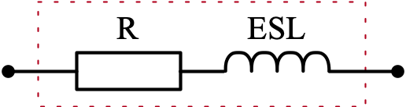] --- name: S3 # Film Resistors .center[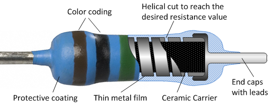 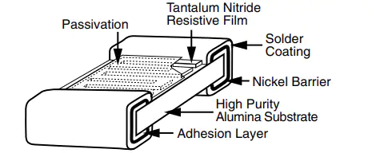 .credits[TH and SMT film resistor construction taken from [[1]](https://eepower.com/resistor-guide/resistor-materials/metal-film-resistor/#), [[2]](https://www.mouser.com/new/vishay/vishay-ptn-resistors/)] ] - Constructed by depositing a conducting film of carbon, metal or metal oxide on to an non-conducting substrate like ceramic - Most common type of resistors used in electronics circuitry - The type of conducting film used lead to some unique properties - A high precision helix grooved on to the conducting film using a laser allows much smaller tolerances in resistance - An epoxy coating is used to protect the conducting film - These resistors are rated to about 125V-350V and the power rating can be up to a few Watts --- name: S4 # Wirewound Resistors .center[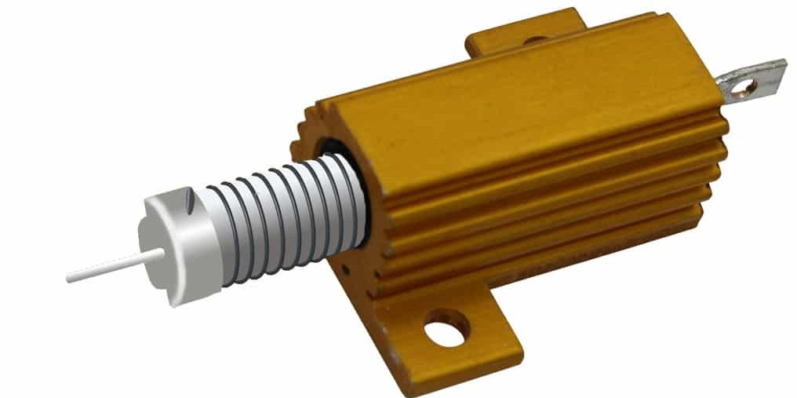 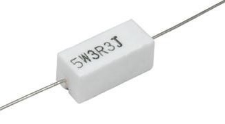 .credits[Wirewound resistors with metal and ceramic housing taken from [[3]](https://passive-components.eu/resistors-wirewound-resistors-construction-pulse-load-and-types/), [[4]](https://circuit.direct/products/5-watt-wirewound-resistor-with-10-tolerance-pack-of-10-r-xx-5w-10pk?variant=2368415812)] ] - Constructed by winding a thin metal alloy wire in form of a helix around an insulator - Winding is encapsulated in a non-conducting potting material - Some devices have a metal housing with fins to dissipate the heat effectively (i.e., a heatsink) - These resistors have high-current and high-power ratings - Typically used as load resistors (e.g., variable load used in this project) - The larger number of turns and the cross-sectional area result in a significantly higher ESL - Thus, not suitable in some applications (e.g., current sense resistor) --- name: S5 # Potentiometers .center[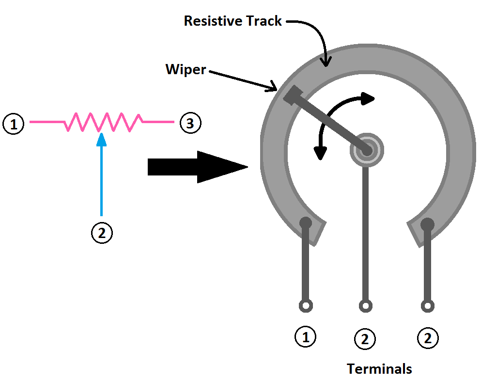 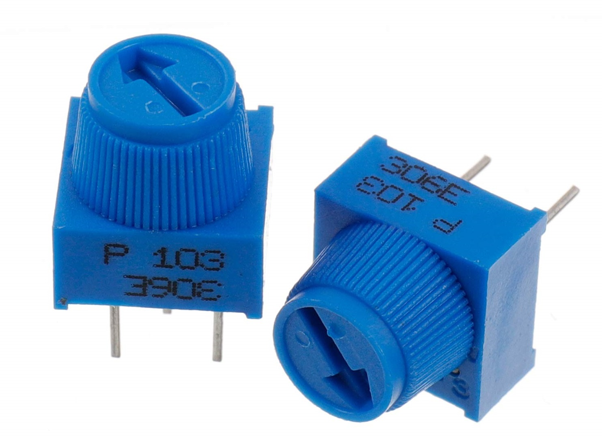 .credits[Potentiometer construction and example devices taken from [[5]](https://www.etechnog.com/2021/07/potentiometer-diagram-symbol-construction.html), [[6]](https://www.u-buy.com.tw/en/product/5H00LR2-bojack-10k-ohm-breadboard-trim-potentiometer-with-knob-for-arduino-p103-3-terminal-pin-blue-variable)] ] - Constructed using a sliding or a rotating contact to provide an adjustable resistance - Usually a three terminal resistor where there is a terminal at each end of the resistor - The third terminal is connected to the sliding/rotating contact - The third terminal forms an adjustable voltage divider - Commonly used in applications such as volume control - Can be used in places where the resistance need to be trimmed/calibrated to provide greater accuracy - Value can change over time for example due to vibrations --- name: S6 # Resistor Marking .left-column-s[ - TH axial type resistors predominantly use a 4 or a 5 or a 6 band colour-coding system to indicate their resistance and tolerance - SMT and a few TH resistor types use a numbering scheme to indicate resistance in Ω - First 2 numbers represent the two most significant digits of the value - The last number is the ten-to-the-power multiplier (e.g., 10x10<sup>4</sup> Ω and 10x10<sup>5</sup> Ω ) .center[<img src="img/smt2.jpg" height="60"> 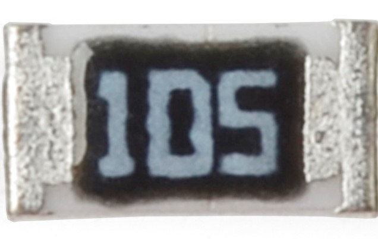 .credits[SMT resistor marking taken from [[7]](https://learn.sparkfun.com/tutorials/resistors/decoding-resistor-markings)] ] ] .right-column-s[ .center[<img src="img/ResistorsMarking.png" height="380"> .credits[TH axial resistor marking taken from [[7]](https://learn.sparkfun.com/tutorials/resistors/decoding-resistor-markings)] ] ] --- name: S7 # Resistance Measurement .center[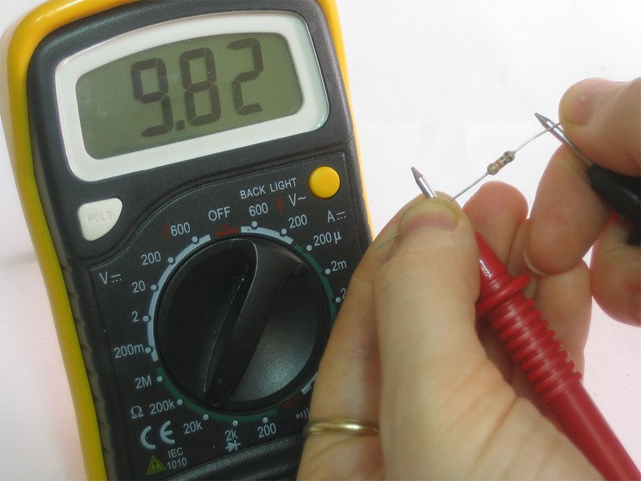 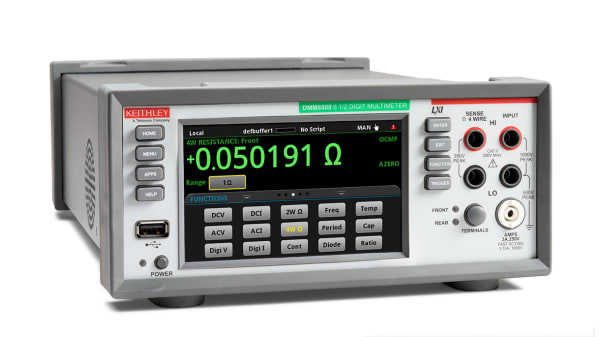 .credits[Handheld multimeter measuring resistance and a bench multimeter taken from [[8]](https://learn.adafruit.com/multimeters/resistance), [[9]](https://nz.rs-online.com/web/p/multimeters/1739960/)] ] - A handheld or a bench multimeter can be used to measure resistance of a resistor - Switch the multimeter in to the resistance measurement option - Make sure the black lead is plugged to *COM* or *LO* terminal and the red lead to *Ω* terminal - If measuring large resistors avoid touching the terminals of the resistor to reduce error - Measuring resistance of a resistor while in circuit (i.e., on PCB) is often not possible - Devices connected to it on the PCB will introduce an error in to the measurement --- name: S8 # Resistor Parameters .left-column[ - There are many device parameters to consider when selecting each resistor used in a design - Resistance value - Tolerance - Temperature coefficient - Power rating - Voltage rating - Parasitic inductance (ESL) - Type of resistor (i.e., carbon composition, film, wire wound, ceramic, foil, etc.) - Package (i.e., through-hole, surface-mount, axial, 0805, etc.) - In addition, cost, availability, lifecycle, etc. needs to be considered ] .right-column[ .center[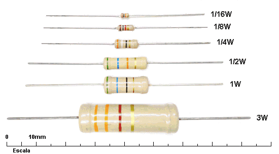 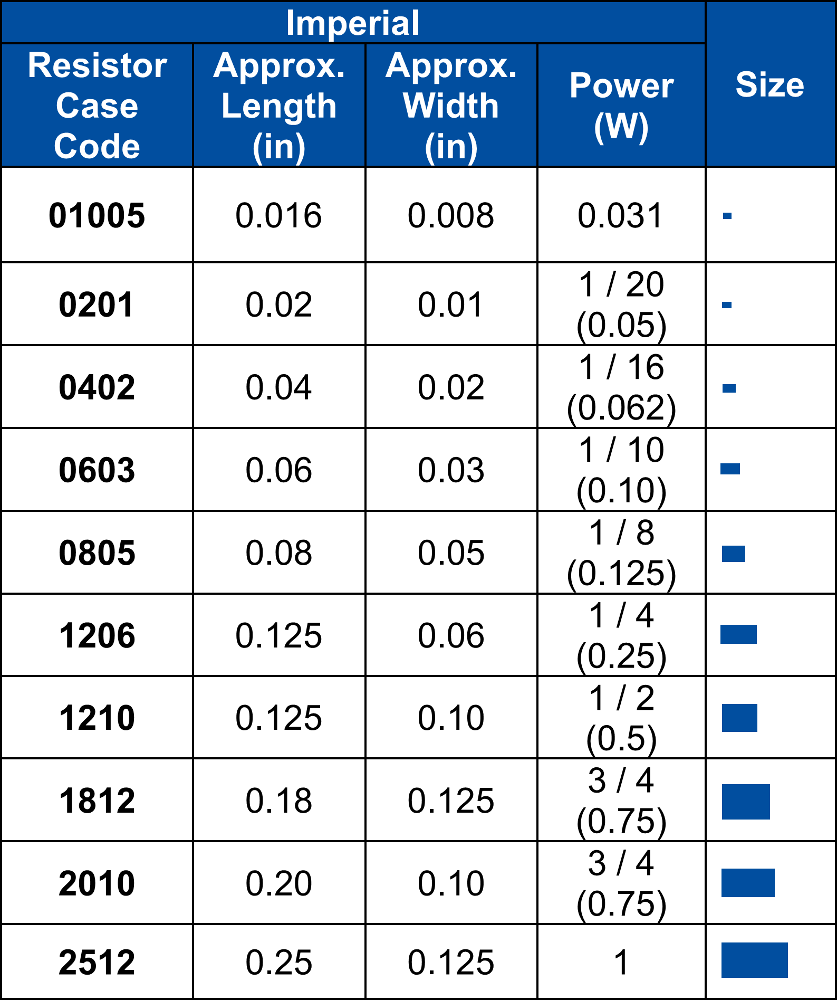 .credits[TH and SMT resistor sizes taken from [[10]](http://newautoinsurance.review) and [[11]](https://www.newmatik.com/knowledge-base/KB-EN-00928/resistor-case-sizes)] ] ] --- class: title-slide layout: false count: false .logo-title[] # Capacitors ### Practical Considerations --- layout: true name: template_slide .logo-slide[] .footer[[Duleepa J Thrimawithana](https://www.linkedin.com/in/duleepajt), Department of Electrical, Computer and Software Engineering (2021)] --- name: S9 # Capacitors - The capacitance of a capacitor made using two conducting plates, where each plate has an area, A, separated by, d, and uses insulation material between the plates with a permittivity, ε<sub>r</sub>ε<sub>0</sub>, is given by, \\[ C = \frac{\epsilon\_\text{r} \epsilon\_0 A}{d} \\] - A capacitor is thus made using conducting plates that has specific area and a separation, which gives the required capacitance - The plates typically arranged like a multilayer "wrap" to reduce the size of the capacitor - A practical capacitor not only has capacitance but also has some inductance and resistance - Can be modelled as a capacitor, C, an Equivalent Series Inductance, ESL and an Equivalent Series Resistance, ESR .center[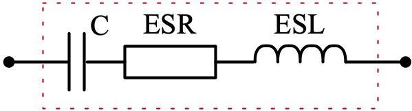] --- name: S10 # Electrolytic Capacitors (PI) .center[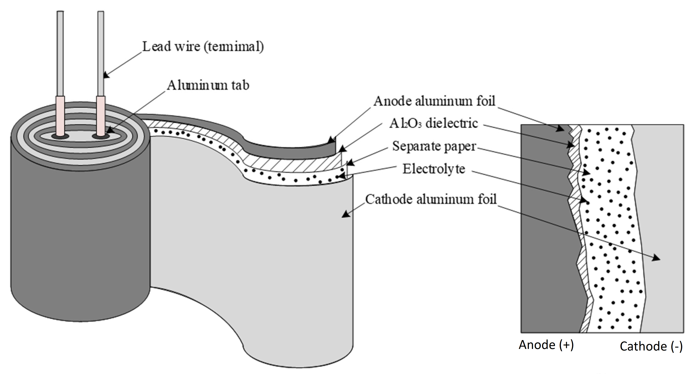 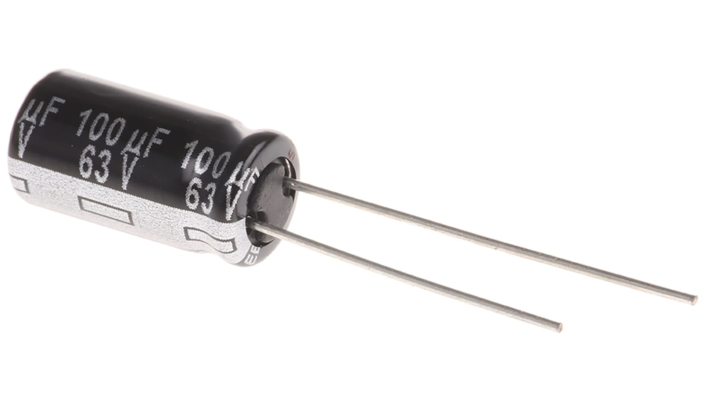 .credits[Electrolytic capacitor construction taken from [[10]](https://www.mdpi.com/1424-8220/20/13/3740/htm), [[11]](https://nz.rs-online.com/web/p/aluminium-capacitors/7472207/)] ] - Electrolytic capacitors are polarized and therefore can only be used in DC circuits - Negative terminal is usually identified by the marking and also is the shorter lead - The anode is made from an aluminum foil and cathode is made with an paper impregnated electrolyte gel - The aluminum foil has an oxide layer that acts as the insulator between the foil and the gel - The aluminum foil is etched to create an uneven surface and increase area --- name: S11 # Electrolytic Capacitors (PII) .left-column[ - Because of the extremely small thickness of the oxide layer, capacitance value can range up to about a few Farads - The voltage rating can be as high as 650 V for readily available devices - However the electrolyte increases the equivalent resistance (ESR) and can be as high as a few ohms - Not suitable for high-frequency applications or decoupling - ESR is higher at lower operating temperatures - The electrolyte eventually dries off, leading to failure of the capacitor - Life time few thousands hours to few tens of thousands of hours - Life degrade rapidly with increasing operating temperature ] .right-column[ .center[ 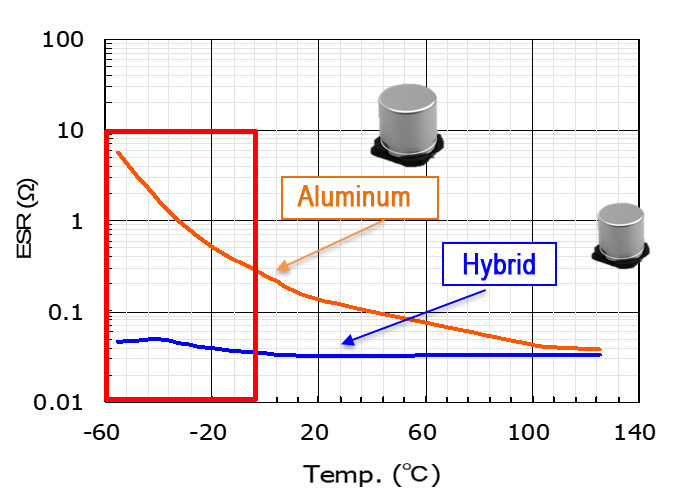 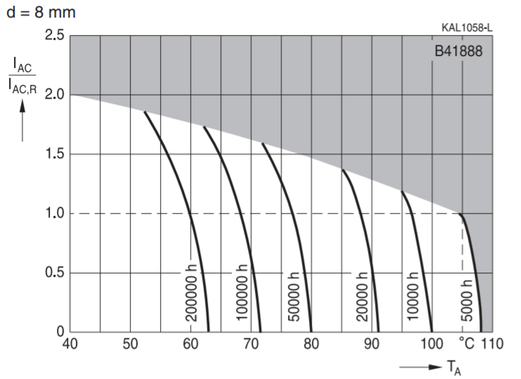 .credits[ESR & lifetime taken taken from [[12]](https://industrial.panasonic.com/ww/products/pt/hybrid-aluminum), [[13]](https://resources.altium.com/p/electrolytic-capacitor-lifespan)] ] ] --- name: S12 # Film Capacitors (PI) .center[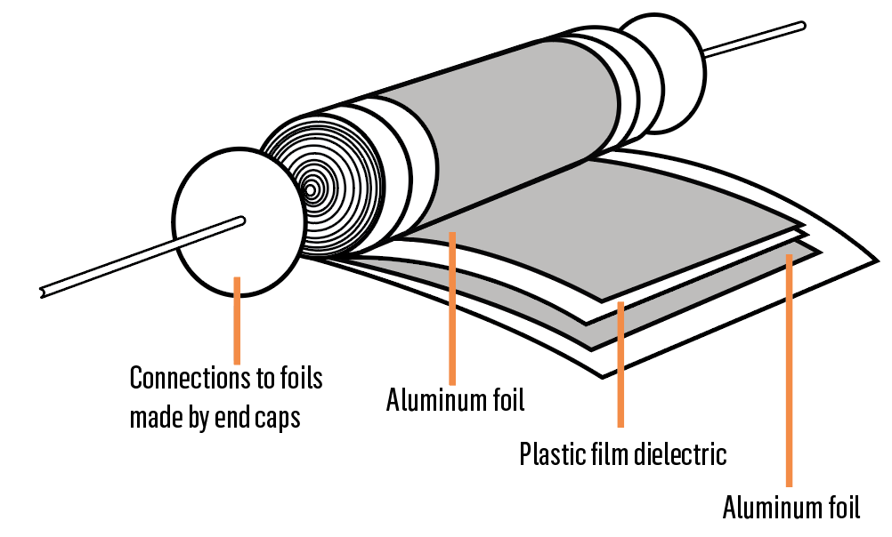 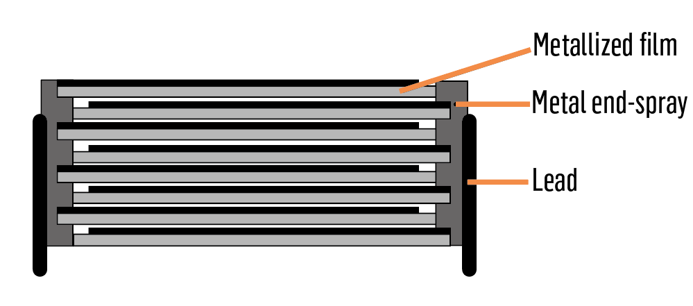 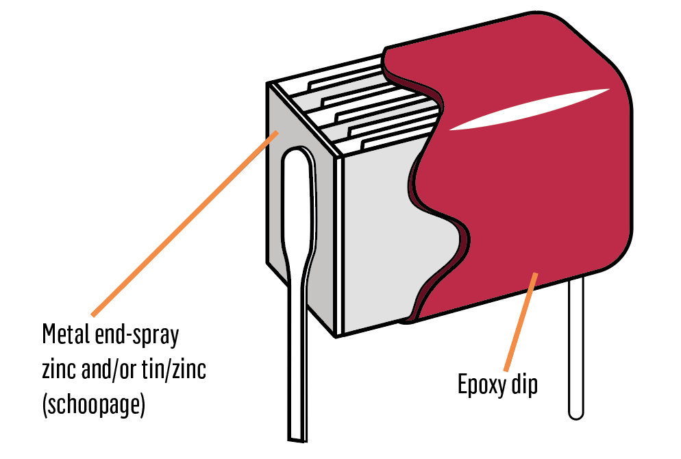 .credits[Film capacitor construction taken from [[14]](https://chargedevs.com/features/a-closer-look-at-film-capacitors/)] ] - Made by wrapping a large number of layers of two metal foils that are separated by a dielectric material - The dielectric material can be paper, polyester, polystyrene, polypropylene, etc. - In some the dielectric foil has a thin conducting layer deposited instead of using a metal foil - These are termed metalized foil capacitors - Extremely long life time in the order of many hundreds of thousands of hours - As with electrolytic capacitors, life time decrease with increasing temperature - Some film capacitors have self-healing properties --- name: S13 # Film Capacitors (PII) .center[ 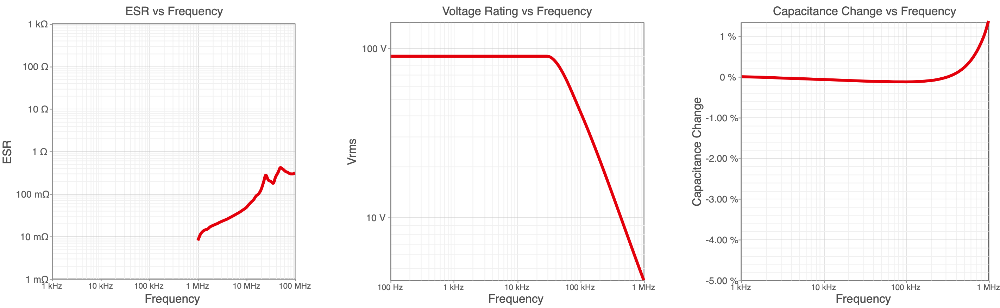 .credits[ESR, voltage de-rating & capacitance change with frequency taken taken from [[15]](https://redexpert.we-online.com/)] ] - Because of the thickness of the dielectric film, capacitance values are limited to 100s of μF - The voltage rating can be as high as 10kV - Though capacitance is unaffected by voltage, at higher frequencies voltage applied should be reduced - The metal foil used as electrodes helps dramatically reduce the ESR to well below 100mΩ - Though ESL of larger capacitors can be significant, film capacitors are good for decoupling - Good for high-frequency applications as capacitance is unaffected by frequency --- name: S14 # Ceramic Capacitors (PI) .center[<img src="img/CeramicStc2.png" height="150"> 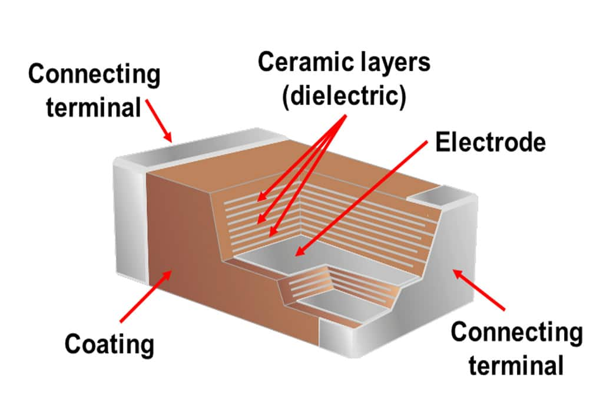 .credits[Ceramic SMT and TH capacitor construction taken from [[16]](https://www.physics-and-radio-electronics.com/electronic-devices-and-circuits/passive-components/capacitors/ceramiccapacitor.html), [[17]](https://passive-components.eu/capacitors-introduction-to-ceramic-capacitors/)] ] - Made using alternating layers of ceramic and metal where the ceramic is used as the dielectric - Because of the thickness of the dielectric, capacitance values are limited to 10s of μF - The voltage ratings can be as high as 10s of kVs owing to properties of ceramic dielectric - The metal plates used as electrodes helps dramatically reduce the ESR to well below 100mΩ - ESL is also quite small and therefore widely used as decoupling capacitors - Extremely long life time in the order of many hundreds of thousands of hours - Life time decrease with increasing temperature as well as with mechanical forces like vibrations --- name: S15 # Ceramic Capacitors (PII) .center[ 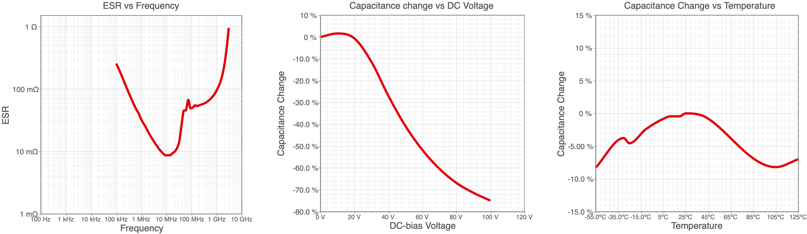 .credits[ESR, voltage impact & temperature impact for X7R capacitors taken taken from [[15]](https://redexpert.we-online.com/)] ] - The properties of the dielectric lead to different temperature coefficients and a few other characteristics - Ceramic capacitors are thus often categorized based on their temperature coefficient - X7R and C0G/NP0 are the two most common ceramic capacitors categories/types - X7R capacitors are are usually cheaper and they have higher capacitances up to 10s of μF - Their capacitance degrade significantly with voltage applied and temperature - They are not quite suitable for applications such as filters and resonant circuits --- name: S16 # Ceramic Capacitors (PIII) .center[ 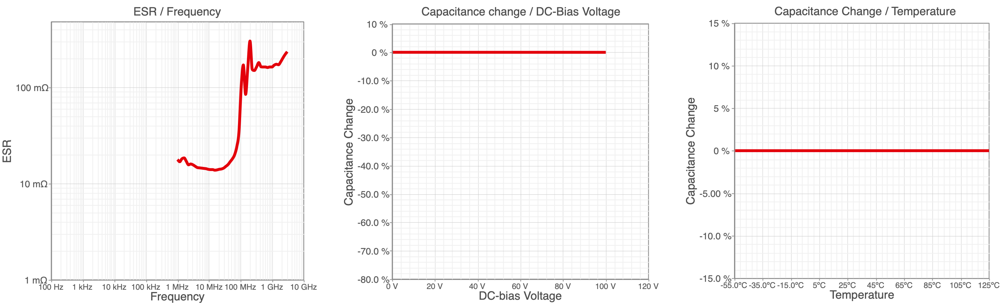 .credits[ESR, voltage impact & temperature impact for C0G/NP0 capacitors taken taken from [[15]](https://redexpert.we-online.com/)] ] - C0G/NP0 capacitors are are usually expensive and their capacitances are limited to a few μF - At higher voltages capacitor values are limited to a few tens of nF - Their capacitance remain constant regardless of the voltage applied or the temperature - They are thus suitable for applications such as filters and resonant circuits - ESL is typically well under 1nH --- name: S17 # Capacitor Summary .center[ 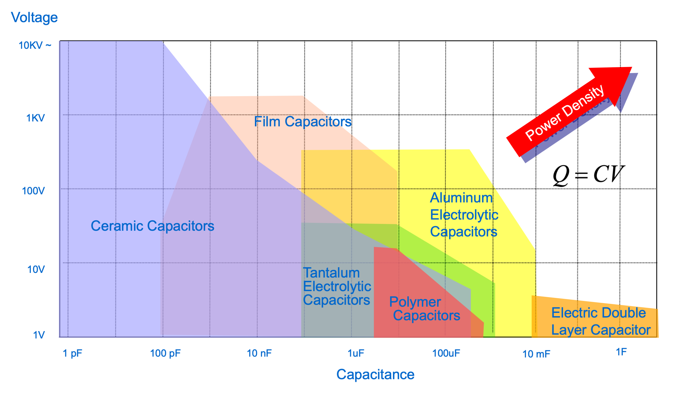 .credits[Summary of capacitor types taken taken from [[17]](https://slideplayer.com/slide/3597046/)] ] --- name: S18 # Capacitor Marking .left-column-s[ - TH electrolytic capacitors usually have the capacitance with the unit printed on the package - SMT electrolytic capacitors usually have the capacitance in μF printed on the package - TH film and ceramic capacitors often use a 3 digit code to indicate capacitance in pF - First 2 numbers represent the two most significant digits of the value - The last number is the ten-to-the-power multiplier (e.g., 10x10<sup>4</sup> pF) - SMT film and ceramic capacitors capacitors often do not have any marking ] .right-column-s[ .center[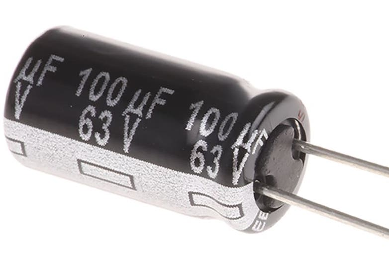 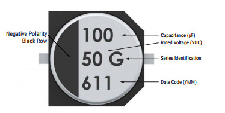 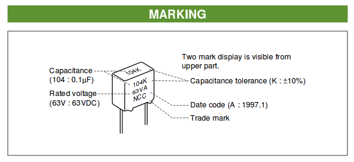 .credits[Resistor marking taken from [[11]](https://nz.rs-online.com/web/p/aluminium-capacitors/7472207/), [[18]](https://forum.digikey.com/t/smt-electrolytic-capacitor-with-no-voltage-rating/974) and [[19]](https://electronics.stackexchange.com/questions/240258/date-code-in-components-marking)] ] ] --- name: S19 # Capacitance Measurement .center[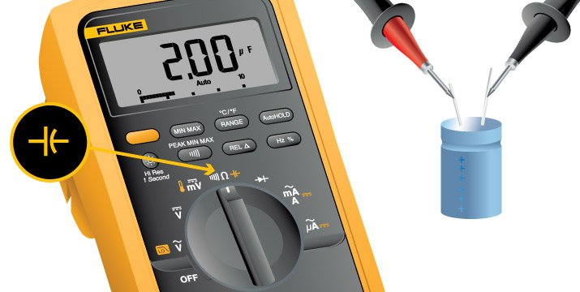 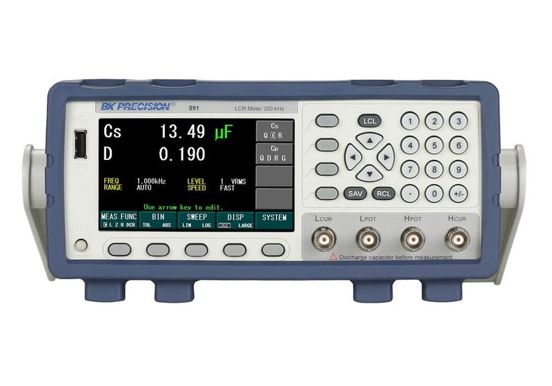 .credits[Measuring capacitance using multimeter or an LCR meter taken from [[20]](https://www.fluke.com/en-us/learn/blog/electrical/what-is-capacitance), [[21]](https://www.meilhaus.de/en/bk89x.htm)] ] - Before measuring a capacitor make sure it is discharged as a charged capacitor can damage the measurement equipment - Some multimeters allow capacitance measurement - Select the capacitance measurement setting to use this feature - Black lead should be plugged to *COM* or *LO* terminal and the red lead to *Ω* or *V* terminal - For precise measurement of capacitance, ESR and ESL, we can use an LCR meter --- name: S20 # Capacitor Parameters - There are many device parameters to consider when selecting each capacitor used in a design - Capacitance value & tolerance - Equivalent Series Inductance (ESL) - Equivalent Series Resistance (ESR) - Voltage & ripple current rating - Polarized or non-polarized - Endurance - Type of capacitor (i.e., electrolytic, ceramic, film, tantalum, polymer, electric double-layer, etc.) - Package (i.e., through-hole, surface-mount, radial, 0805, etc.) - In addition, cost, availability, lifecycle, etc. needs to be considered --- class: title-slide layout: false count: false .logo-title[] # Diodes and Zener Diodes ### Practical Considerations --- layout: true name: template_slide .logo-slide[] .footer[[Duleepa J Thrimawithana](https://www.linkedin.com/in/duleepajt), Department of Electrical, Computer and Software Engineering (2021)] --- name: S21 # VI Behavior of Diodes .left-column[ - A two terminal device made using semiconductor material with a P-N junction - Terminal connected to P-doped region is called the anode and the one connected to the N-doped region is called the cathode - When anode is at a higher potential than cathode (i.e., positive V<sub>AK</sub>), diode is forward biased and current flow from A to K - Forward voltage drop, V<sub>F</sub>, can be in the range 0.2V to about 2.5V depending on the diode type - When V<sub>AK</sub> is negative, diode is reverse biased and only a very small leakage current flows - If reverse voltage rating, V<sub>R</sub>, exceeded, diode will breakdown - A diode damaged by exceeding V<sub>R</sub> usually behaves like a short ] .right-column[.center[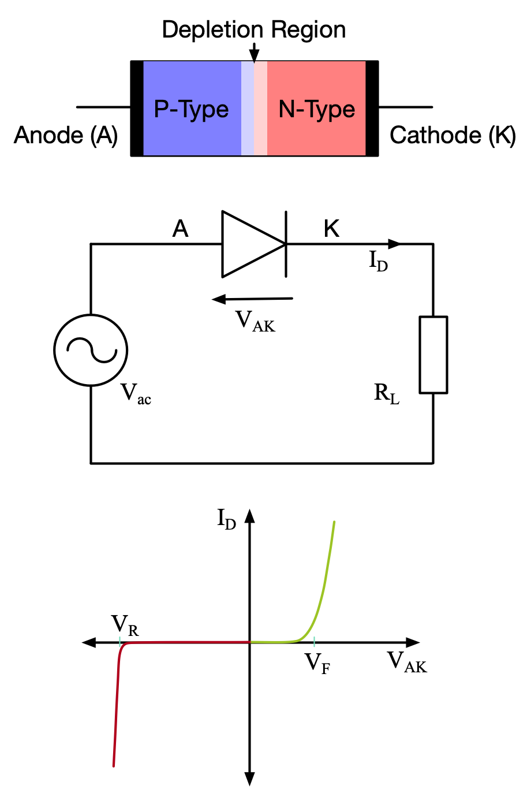] ] --- name: S22 # Switching Behavior of Diodes .left-column[ - A practical diode takes a certain time to transition from forward bias to reverse bias (i.e., time to turn-off) - This time is referred to as the reverse recovery time, t<sub>rr</sub> - During t<sub>rr</sub> both I<sub>D</sub> and V<sub>AK</sub> are large leading to losses - Depending on rated forward current, I<sub>F</sub>, diodes can be categorized as signal diodes (I<sub>F</sub> < 200mA) or power diodes (I<sub>F</sub> > 200mA) - Power diodes can be further categorized depending on their t<sub>rr</sub> - Schottky diodes are the most ideal with t<sub>rr</sub> of 0 and a V<sub>F</sub> around 0.2V-0.4V, but expensive and V<sub>r</sub> limited to about 300V - t<sub>rr</sub> of hyper-fast to fast diodes are in the 10s of ns to about 500ns, while V<sub>F</sub> is about 1V - Standard diodes are suitable for 50Hz/60Hz applications ] .right-column[.center[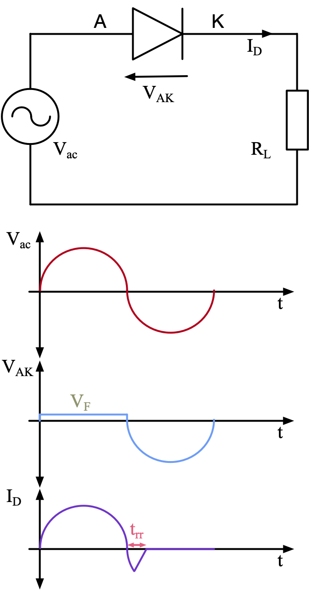] ] --- name: S23 # Testing a Diode .center[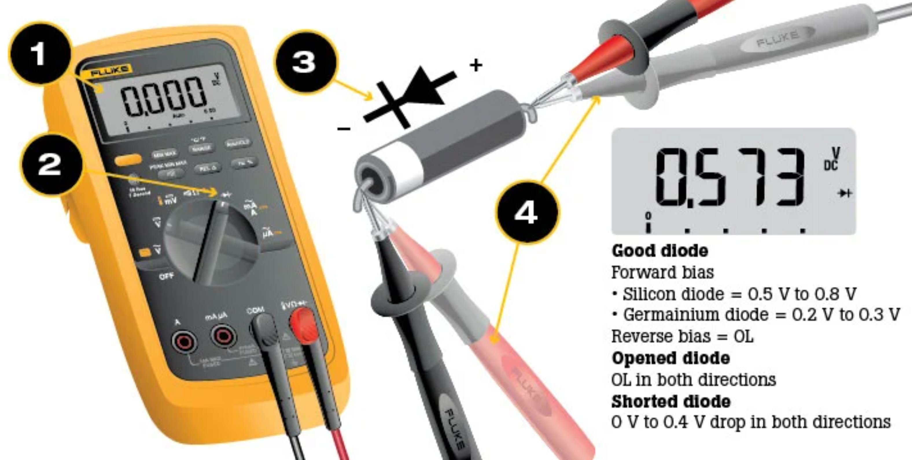 .credits[Handheld multimeter testing diode and a bench multimeter taken from [[8]](https://www.fluke.com/en-us/learn/blog/digital-multimeters/how-to-test-diodes), [[9]](https://nz.rs-online.com/web/p/multimeters/1739960/)] ] - A handheld or a bench multimeter can be used to test a diode - Switch the multimeter in to the diode measurement option - Make sure the black lead is plugged to *COM* or *LO* terminal and the red lead to *Ω* terminal - Touch red lead to anode of the diode and black lead to cathode of the diode - If the diode is good it should read the forward voltage drop of diode - If diode is damaged it will either read open circuit or a near 0V forward drop - Swap the leads and ensure it reads open circuit as the diode is now reverse biased --- name: S23 # Diode Parameters - There are many device parameters to consider when selecting each diode used in a design - Breakdown voltage, V<sub>r</sub> - Current rating, I<sub>F</sub> - Reverse recovery time, t<sub>rr</sub> - Forward voltage drop, V<sub>F</sub> - Reverse biased leakage current - Parasitic junction capacitance - Thermal resistance - Type of diode (i.e., Schottky, ultra-fast, fast, standard, signal, etc.) - Package (i.e., through-hole, surface-mount, axial, SMA, etc.) - In addition, cost, availability, lifecycle, etc. needs to be considered --- name: S24 # VI Behavior of Zener Diodes .left-column[ - A type of a diode that maintains a nearly constant voltage across it while under reverse biased - Current flows from K to A, and V<sub>AK</sub> is a nearly constant negative voltage, referred to as *Zener Voltage*, V<sub>Z</sub> - The current at which nominal V<sub>Z</sub> is measured is the nominal bias current, I<sub>Z</sub> - Need to make sure the power dissipation in the Zener is kept below rating indicated by manufacturer - When forward biased (i.e., positive V<sub>AK</sub>), a Zener diode behaves like a normal diode and current flow from A to K - Forward voltage drop is in the range 0.7V to about 2V - Commonly used for protection and voltage regulation ] .right-column[.center[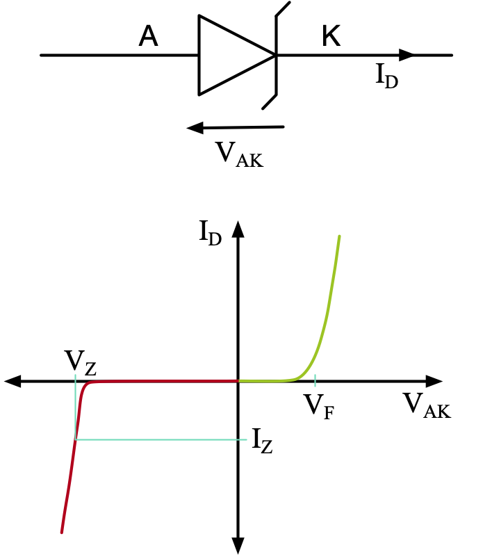] ] --- name: S25 # Example: Clipper Circuit .questions[ A voltage divider, shown below, is used to step-down 230VAC mains supply voltage before passing through a 5V signal conditioning circuitry to the ADC of an MCU. Sketch a clipper circuit that uses the BZX79-B/C2V4 Zener diodes, to ensure voltage across V<sub>vs</sub> is clipped to below ±5V. Sketch the voltage across V<sub>vs</sub> with this clipper circuit, when the mains voltage is 230VAC. A surge in the utility grid has caused the mains voltage to jump to 600VAC. Sketch the voltage across V<sub>vs</sub>, to show how the clipper circuit help prevent damage to your signal conditioning circuit. Instead of the BZX79-B/C2V4, can we use 1N4148 diodes to implement a clipper circuit? ] .center[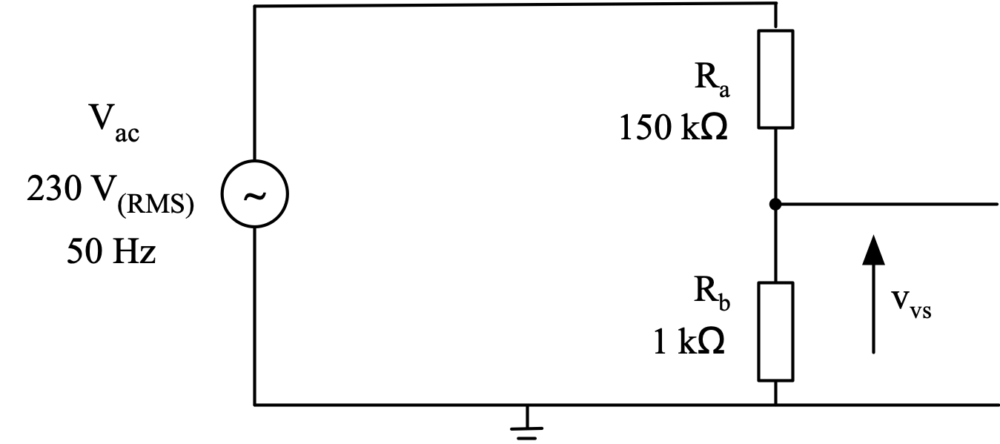] --- class: title-slide layout: false count: false .logo-title[] # PCB Design ### Practical Considerations --- layout: true name: template_slide .logo-slide[] .footer[[Duleepa J Thrimawithana](https://www.linkedin.com/in/duleepajt), Department of Electrical, Computer and Software Engineering (2021)] --- name: S26 # Ground Planes .zoom175[ .center[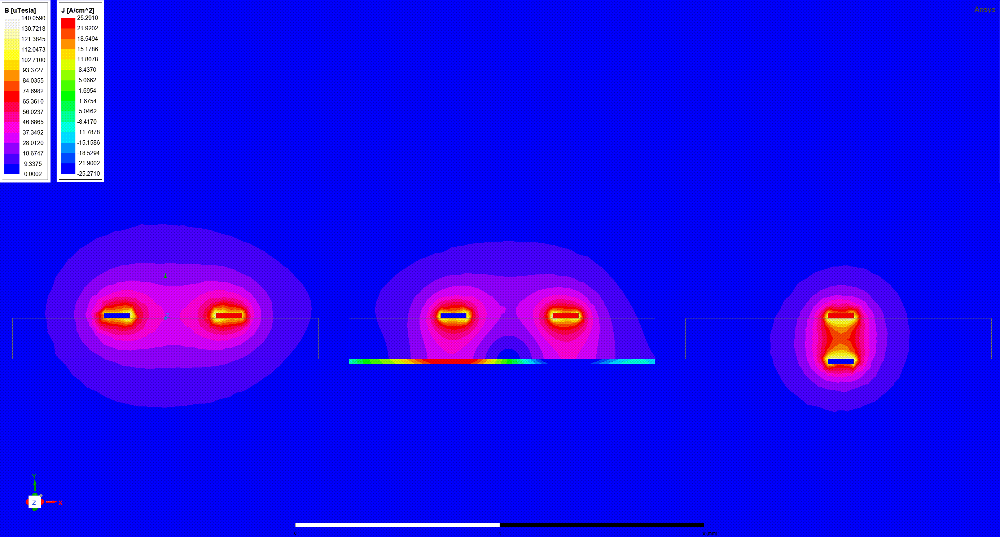] ] - Current carrying traces emit electromagnetic noise as the magnitude of current changes - Field emitted not only couples to neighboring traces but also to outside world - The amount of field coupled from one trace to the other as well as field emitted to the outside world can be reduced using a ground plane - The changes in current induces eddy currents in ground plane inturn producing a "cancelling field" - Alternatively, return trace can be placed straight below current path to reduce field emitted --- name: S27 # Decoupling Capacitors .center[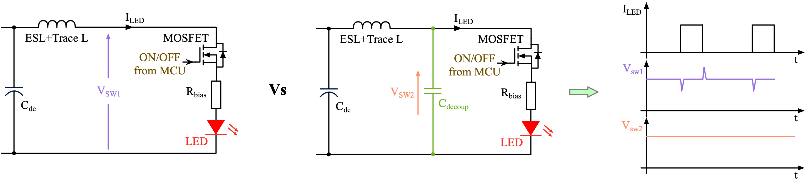] - PCB traces and vias introduce inductance in addition to ESL of the bulk capacitors - This could be in the range of a few nH to tens of nH - Trace inductances and ESL of bulk capacitors resist changes in the current demand - In example, when LED is turned on, inductor resists increase in current and as a result V<sub>sw1</sub> dips - A decoupling capacitor near the "consumer" helps meet its instantaneous current demand - The decoupling capacitor keeps V<sub>sw2</sub> nearly constant and minimize generation of electrical noise - Size of decoupling capacitor depends on current drawn by "consumer" and parasitic inductances --- class: title-slide layout: false count: false .logo-title[] # Questions?